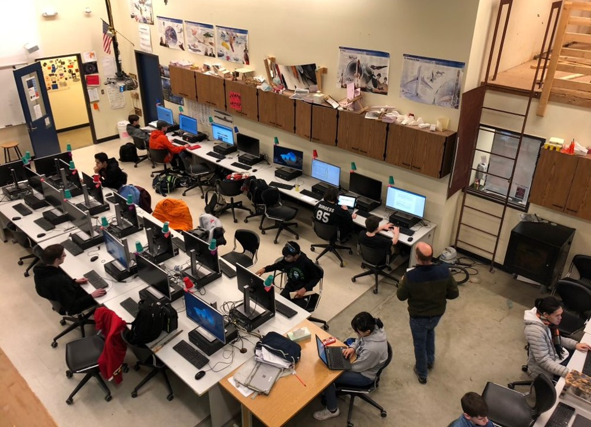

1/13
The DECA club is led by Ms. Jennifer Harris on every Wednesday at 12:50 after school and Friday at 7:25 before school.
The club focuses on developing students to become better leaders and entrepreneurs for careers in marketing, finance, hospitality,
and management. Students can go to the meetings to prepare for the DECA competitions, where those with more experience often mentor the new members of the club.
From finance and design to business promotion and entrepreneurship, the DECA
competition provides a range of categories for students to express and explore their interests. Every year, JHS sends several of the highest performing students
to compete at the state and international level.
2/13

The Drama Club is supervised by Ms. Elizabeth McMurray-Hauk after school. Members of the club are involved in all
aspects of the drama productions. In the past years, JHS has delivered stunning performances, such as Zombie Prom and Macbeth (2014-2015), A Wrinkle in Time and The Man Who Came to Dinner (2015-2016),
the Pirates of Penzance and the Love of Three Oranges (2016-2017), the Addams Family and the Tempest (2017-2018), Arabian Nights and Our Town (2018-2019), and finally the most recent She Kills Monsters. In 2015, Juanita Drama Students participated in Washington State Thespian IE Regionals, and earned
State and National Rankings in 7 different events, including monologues, solo song, scienic design, and sound design.
3/13
The Electronics Club is led by Ms. Pike on Wednesdays 12:45, once a month. The club focuses on circuit boards, soldering,
and other start-up electronic skills. Small electronic projects will be given, and members have the opportunity to work on them
during the club meetings to expand and build their printed circuit board (PCB) knowledge and skill.
4/13

FCCLA is a club that focuses on personal growth and developing leadership skills specifically through Family and Consumer Sciences Education.
Members will develop skills for life through character development, creative and critical thinking, interpersonal communication,
practical knowledge, and career preparation. If you want to SERVE your community, GAIN leadership experience, LEARN leadership skills,
and COMPETE at the local, state, and international levels, come and join the fun!
5/13

The Coding Club is led by Mr. Apley at 12:50 on Wednesdays. The club focuses on learning and developing members' coding abilities
and skills. Anyone is free to come, and no experience is needed!
6/13
The National Honor Society is headed by Ms. Barber. Members of the club must attend a mandatory meeting once every semester. This is
a nationally sponsored club that promotes school and community service. Members must maintain a 3.5 GPA and give 30 hours of service.
Volunteer opportunities, hour logs, and all forms are posted on the school website for students to check.
7/13
HOSA is led by Mr. Clemente and Ms. Pike on Wednesdays, from 12:45 to 1:15. It is a nationally recognized club about health sciences
where students can dive into the medical field and explore potential careers within it. Students will research topics and may choose
to compete in the competitive events. The competition is designed to motivate HOSA members to improve their knowledge and skills, and
several JHS students have won awards for their work in the past.
8/13
The Interact Club is led by Ms. Phillips on Thursdays during Homeroom in the JHS cafeteria. The club provides volunteer opportunities for
anyone who would like to join, without feeling pressured to rack up a certain number of service hours. Service projects include
blood drives held twice a year, collecting food for Hopelink, cleaning up local parks, and designing cards for members of Merrill Gardens, which
are senior living homes. They are also connected with the Kirkland Rotary Club.
9/13
The Key Club meets on Thursday mornings at 7:20 with Mr. Miller. The club is affiliated with the Kiwanis organization, and they do
activities that help out the school and local community. Every June, the Key Club also manages the annual Transition Room Carnival.
The club is open to anyone who wants to hang out, give back to the community, and have fun!
10/13
The Literary Magazine is led by Ms. Steward, and meets during Homeroom. The JHS Literary Magazine, often shortened simply to LitMag
is created and published once every year and represents an outstanding collection of JHS student visual art, poetry, and short stories.
JHS students can choose to submit their work, and the LitMag Staff take care of the rest by compiling the best pieces and editing.
At the end of the year, the LitMag is published and sold for $2.
11/13
The Rebellion is the student newspaper at JHS, and is supervised by Mr. Cheng. JHS students may submit their work, and current events
editorials, and a variety of Rebel information will be published. It is a place for students to express their opinions and thoughts
in a safe place without being judged.
12/13
Model United Nations (M.U.N.) is led by Mr. Miller on Thursdays at 7:20am. The club is committed to providing an environment where
members may use information effectively to represent their countries in a civilized debate. Anyone interested in world affairs is free to join.
In addition to M.U.N., JHS provides another opportunity to get involved in politics/government issues: the Student Senate headed by Mrs. Hasslinger.
This is the student government at JHS, where representatives from each homeroom and Club are sent to discuss student issues and monitor how
the ASB funds should be spent.
13/13

Technology Student Association (TSA) meets every Thursday after school. The club is led by Mr. Shelton and Mr. Apley. Members must attend
at least 80% of the meetings to be elgible for competition. Anyone interested in rockets, robotics, software, cars, or engineering is free
to join the club. Competitions at the regional and state level are also held later in the year.
❮
❯